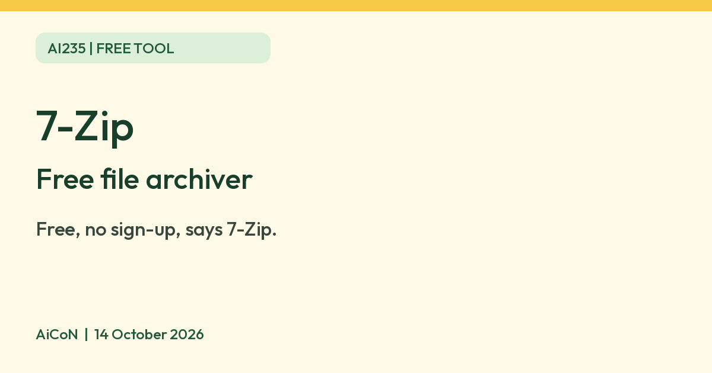

7-Zip: free file archiver for zip and more
7-Zip says it is free software with open source, and you do not need to register or pay. It packs and opens many archive types.

7-Zip logo
What it is
7-Zip is a file archiver. It packs files into smaller archives and opens many archive types. Its homepage says it has a high compression ratio. It is not an AI tool. We included it because it is a free tool from an official source.
Is it free?
Yes. The 7-Zip homepage says: "7-Zip is free software with open source." It also says you can use it on any computer, including in a company, and "You don't need to register or pay for 7-Zip."
What it does
- Packs and unpacks 7z, XZ, BZIP2, GZIP, TAR, ZIP and WIM, says the homepage.
- Opens many more formats, including RAR, ISO, DMG and CAB (unpacking only).
- AES-256 encryption for 7z and ZIP archives, says the homepage.
- Windows File Manager and a command line version.
Which devices
- Windows: installers for x64, x86 and ARM64. The homepage shows version 26.04 dated 2026-10-05.
- The download page also lists console (command line) versions for Linux and macOS. There is no graphical app for them on that page.
- Current 26.04 downloads do not list a phone version. The same page has an old 9.20 Windows Mobile / Windows CE download; this is historical, not a current Android or iOS offering.
Privacy and data
- We found no privacy policy or data-use statement on the pages we read. 7-Zip's license page says it is under the GNU LGPL, with some BSD parts and an unRAR restriction for some code.
- Download only from 7-zip.org. We did not check what the installer or program sends over the network.
India
- We found no India-specific statement or age limit on the pages we read.
Frequently asked questions
Is 7-Zip free?
Yes. Its homepage says you do not need to register or pay, including in a company.
Does it work on Mac or Linux?
The download page lists console versions only, no graphical app.
Is it AI?
No. It is a file archiver. We included it because it is a free tool from an official source.
How to start
- Open the official download page. For Windows, choose the current installer matching your PC's x64, x86 or ARM64 architecture. The page recommends EXE rather than MSI.
- Install and open 7-Zip File Manager. Use a copy of non-sensitive files for your first test; keep originals backed up.
- Try adding the copy to an archive, then extract it into a separate folder and check the result. RAR is unpacking-only, not a format 7-Zip creates.
- Keep unfamiliar downloads separate and do not run extracted programs you do not trust. AiCoN did not test installation, compression quality or encryption.
What changed since this post?
Homepage, downloads, licence and FAQ rechecked on 14 October 2026. Current version remains 26.04 dated 5 October. Free/no-registration and format claims remain vendor statements. Current Linux/macOS offerings are console versions. Historical Windows Mobile/CE download distinguished from current offerings. Logo licence copy/credit added. No privacy or traffic test, India availability check or installation test was done.
Sources: 7-Zip, Download, License, FAQ. Checked 14 October 2026.
Logo: 7-Zip logo by Robert Martinez, vectorized by CryptWizard, chris and Vulphere, LGPL 2.1 or later (Wikimedia Commons, file page). Independent guide, not affiliated.